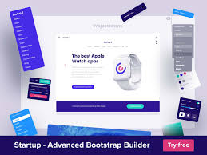
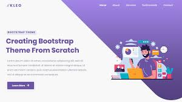
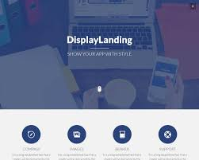

Free Bootstrap Website Templates
BootstrapMade
Jan 01,1970

Day is a multipurpose HTML website template for creatives. You ca n use it for promotion agencies, analysts, marketing, portfolio, and much more. The template is based on Bootstrap framework .

Groovin is a modern and responsive free professional Bootstrap website template. It's suitable for freelancer, agency, corporate, consulting, creative people to showcase their products, ...

Sailor is a stylish, responsive and easy to use business Bootstrap template. It comes with lot of features and designed for many kind websites such as corporate business, portfolio
vesperr is a clean, modern and stylish digital agency website template created with Bootstrap framework. It can be use by agencies, freelancers, corporate business, creative designers ...